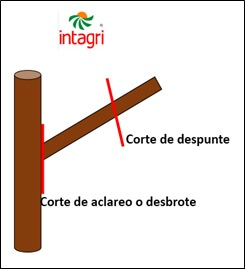
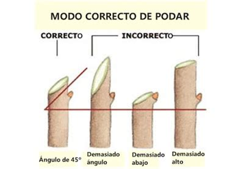

¿Despuntamos o aclaramos?
Se suelen diferenciar 2 técnicas de poda: despuntado o aclarado.
El despuntado consiste en recortar las puntas de las ramas existentes. Cuando el corte es muy bajo sobre la rama, de forma que en la parte que se
queda no hay más de 5 yemas (normalmente 2 ó 3), la poda se denomina corta o en pulgares. Si el corte es más alto y se mantienen más de 5 yemas, hablamos de poda larga o en varas. 
El despuntado desequilibra la estructura y fisiología de la planta y propicia un crecimiento vigoroso a partir de las yemas laterales. El resultado es una planta poco aireada y con una estructura muy enmarañada. No obstante, es una técnica útil, por ejemplo, si queremos hacer una reducción de copa o evitar que esta crezca en exceso.
Por su parte, el aclarado consiste en eliminar ramas enteras, cortándolas por su base y respetando las otras completamente. Con este tipo de poda no se desequilibra tanto la planta, pero se alarga demasiado la estructura y obliga a avanzar las podas de renovación.
Así pues, la mejor recomendación que puede hacerse es no practicar exclusivamente ninguna de las 2 técnicas, y combinarlas en lo posible
, dando en cada planta cortes de los dos tipos en función del elemento que vayamos a podar.
Cómo hacer los cortes
Cuando podemos un árbol, debemos intentar que la herida sea lo más pequeña y limpia posible y con una cierta inclinación para que el agua no se quede estancada en el corte y favorezca la pudrición.

Si vamos a despuntar una rama, haremos el corte cerca de una rama o yema lateral que pueda hacer de tira-savia. Así, al llegar al corte la savia se desviará hacia la rama o yema de lateral, de forma que esta se convertirá en la rama secundaria dominante. El corte no tiene que estar demasiado lejos de esta rama, porque el trozo entre la rama y el corte se quedará seca; pero tampoco demasiado cerca, porque puede afectar a la rama o yema, secándola.
Por otro lado, si vamos a quitar la rama entera, tenemos que recortarla por la base (para evitar que quede un trozo seco) pero sin tocar la zona más gruesa que se encuentra en la base. Las células de esa zona se dividen con mayor facilidad y ayudan a que el corte cicatrice más rápidamente.
Cómo podar ramas gruesas
A veces tendremos que cortar ramas gruesas o pesadas. Debido a su peso, estas pueden desgajar el tronco mientras las cortamos. Para evitarlo, utilizaremos una técnica de poda en 3 cortes:
- Hacer un corte de abajo hacia arriba cerca de la base de la rama. Este corte evitará que la rama se desgaje cuando la estamos cortando.
- Hacer un segundo corte de arriba hacia abajo en un punto de la rama más exterior que el corte anterior. La rama caerá y quedará solo un tocón en el tronco.
- Cortar el tocón desde la base de la forma habitual.